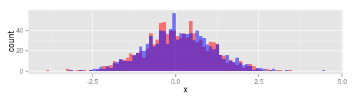

The goal of this Shiny server is to illustrate a few possibilities:
Input parameters
Reactive functions
Plot output
Data science specialization
Coursera
The goal of this Shiny server is to illustrate a few possibilities:
Input parameters
Reactive functions
Plot output
The application draws samples from 2 normal distributions, whose parameters are chosen by the user. It plots them for comparison.
The user chooses the parameters for the 2 normal disitributions and the number of points to draw.
The server outputs the histograms showing the overlap between the two distributions.
It also perfoms a 2 sample T-test and gives the 95% confidence interval for the difference between the means, and the p-value for a null difference.
It can be used to show that even with a lot of overlap, we can distinguish small differences if the number of points is large enough. E.g. \(\mu_1 =0\) and \(\mu_2=0.1\) for \(\sigma=1\) and \(n=1000\):

result<-t.test(draw1$x, draw2$x)
result$conf.int[1:2]
## [1] -0.13923527 0.03983772
result$p.value
## [1] 0.2764743